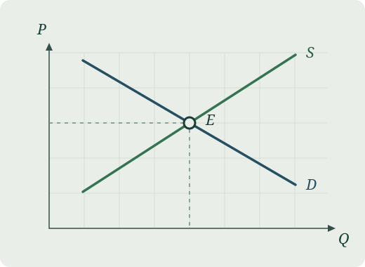

1. 모형의 기본 설정과 시장 청산
가격을 $P$, 시장의 수요량과 공급량을 각각 $Q_d$, $Q_s$라고 정의합니다. 파라미터 $a, c > 0$ 및 $b, d > 0$을 갖는 선형 구조를 가정합니다:
$$ Q_d = a - bP, \qquad Q_s = c + dP $$
시장 청산 조건 $Q_d = Q_s$로부터 균형 가격 $P^*$와 균형 수량 $Q^*$를 명시적으로 계산할 수 있습니다:
$$ P^* = \frac{a - c}{b + d}, \qquad Q^* = \frac{ad + bc}{b + d} $$

2. 단위당 종량세($\tau$)의 도입과 조세 귀착
생산자에게 단위당 $\tau$의 종량세가 부과된다고 하면 공급곡선은 $Q_s = c + d(P - \tau)$로 상향 이동합니다. 새로운 소비자가격 $P_b$와 생산자 수취가격 $P_s = P_b - \tau$는:
$$ P_b^* = P^* + \left(\frac{d}{b + d}\right)\tau, \qquad P_s^* = P^* - \left(\frac{b}{b + d}\right)\tau $$
소비자와 생산자가 부담하는 조세의 상대적 귀착 비율은 다음과 같이 직관적으로 도출됩니다:
$$ \frac{\text{소비자 부담분}}{\text{생산자 부담분}} = \frac{P_b^* - P^*}{P^* - P_s^*} = \frac{d}{b} $$
이 결과는 상대적으로 더 비탄력적인(기울기가 가파르거나 대안이 적은) 경제 주체가 조세 부담의 대부분을 지게 됨을 대수적으로 보여줍니다.